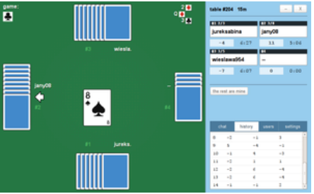

Featured Games
The following text is copied from Wikipedia for sample purposes: Solitaire is any tabletop game which one can play by oneself, usually with cards, but also with dominoes. The term "solitaire" is also used for single-player games of concentration and skill using a set layout tiles, pegs or stones. These games include peg solitaire and mahjong solitaire. Most solitaire games function as a puzzle which, due to a different starting position, may (or may not) be solved in a different fashion each time.
